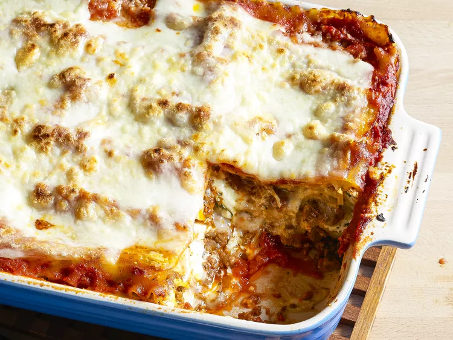

Lasagna

Description
Ingredients
- Meat
- Italian Sausage
- Lean Ground Beef
- Onion and Garlic
- ONEonion
- TWO CLOVES of Garlic
- Tomato Products
- ONE of crushed tomatoes
- TWO cans of tomato sauce
- TWO cans of tomato paste
- Sugar
- TWO tablespoons of white sugar
- Spices and Seasonings
- dried basil leaves
- salt
- italian Seasoning
- fennel seeds
- black pepper
- Lasagna Noodles
- store-bought or homemade is okay
- Cheeses
- Parmesan
- mozzarella
- ricotta
- Egg
Steps
- Make the Meant Sauce
- Cook the Noodles
- Make the Ricotta mixture
- Layer the lasagna according to the recipe instructions
- instructions are further down
- Cover with foil and bake
- Let the lasagna rest before serving
Layer the Lasagna
- Meat Sauce
- Noodles
- Ricotta mixture
- Mozzarella Slices
- Meat Sauce
- Parmesan cheese
- Repeat the layers, then top with the remaining Parmesan.
Cooking instructions
The assembled lasagna should take about 50 minutes to cook in an oven preheated to 375 degrees F.
Cover it with foil for the first 25 minutes, then let it cook uncovered for the final 25 minutes.
Also, it's important to let the lasagna rest at room temperature for about 15 minutes before you
cut into it.